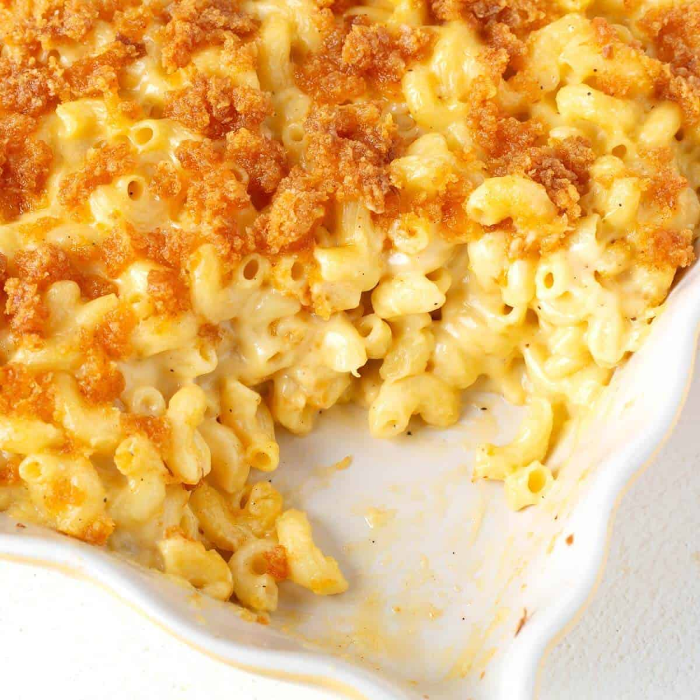

Mac And Cheese

Description
This perfect baked macaroni cheese recipe comes with a creamy cheese sauce, a
hint of mustard and uses leftover French stick for its crunchy topping
Ingredients
- 50g baguette, cut into small chunks
- 2 tbsp butter, plus 1 tbsp melted
- 350g spiral or other short pasta
- 1 garlic clove, finely chopped
- 1 tsp English mustard powder
- 3 tbsp plain flour
- 500ml whole milk
- 250g vegetarian mature cheddar, grated
- 50g parmesan (or vegetarian alternative), grated
Steps
- Heat the oven to 200C/180C fan/gas 6. Spread the baguette chunks over a baking sheet,
drizzle with the melted butter and season. Bake for 6 mins until crisp, then set aside
- Boil the pasta for 2 mins less than stated on the pack, then drain. Meanwhile, melt the
butter in a saucepan. Add the garlic and English mustard powder, cook for 1 min, then
stir in the plain flour.
- Cook for 1 min more, then gradually whisk in the milk until you have a lump-free
sauce. Simmer for 5 mins, whisking all the time until thickened. Take off the heat,
then stir in the cheddar and half the parmesan.
- BStir the pasta and some seasoning into the cheesy sauce. Tip into a large ovenproof
dish, or four individual dishes.
- HScatter over the bread and the remaining parmesan, then bake for 20 mins until crisp
and golden. Can be frozen before baking – defrost thoroughly before cooking.
- Spoon one third of the meat sauce into the dish, then cover with some
fresh lasagne sheets from a 300g pack. Drizzle over roughly 130g ready-made
or homemade white sauce.
- Repeat until you have 3 layers of pasta. Cover with the remaining 390g white
sauce, making sure you can’t see any pasta poking through.
- Scatter 125g torn mozzarella over the top.
- Arrange the rest of the prosciutto on top. Bake for 45 mins until the top is
bubbling and lightly browned.
Recipe Tip
USE UP BLUE CHEESE
Crumble 50g stilton, dolcelatte or roquefort into the sauce, instead of the parmesan.
Spoon the pasta into the dish, then top with 4 trimmed field mushrooms, gills facing
upwards, instead of the crumbs. Drizzle with a little oil, season, then top with a
little more blue cheese. Bake as before.